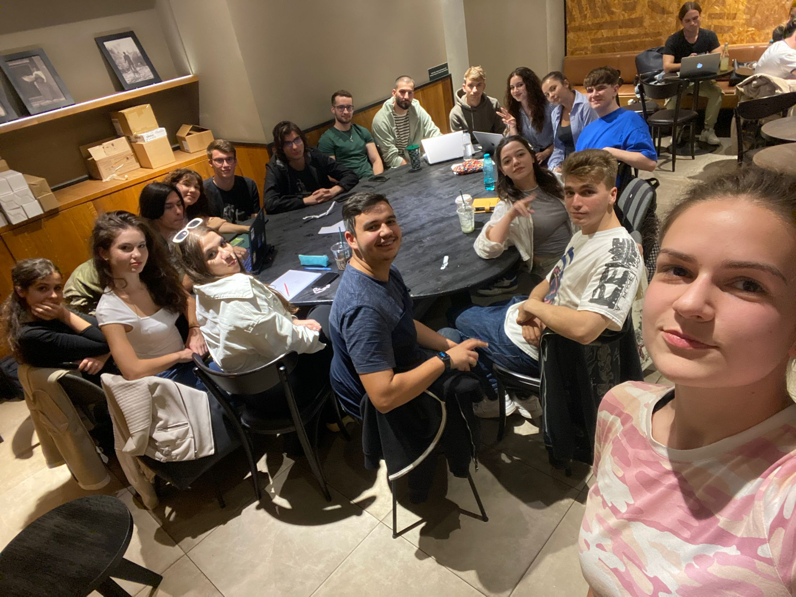
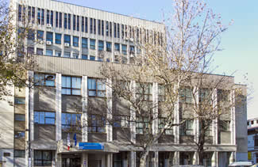
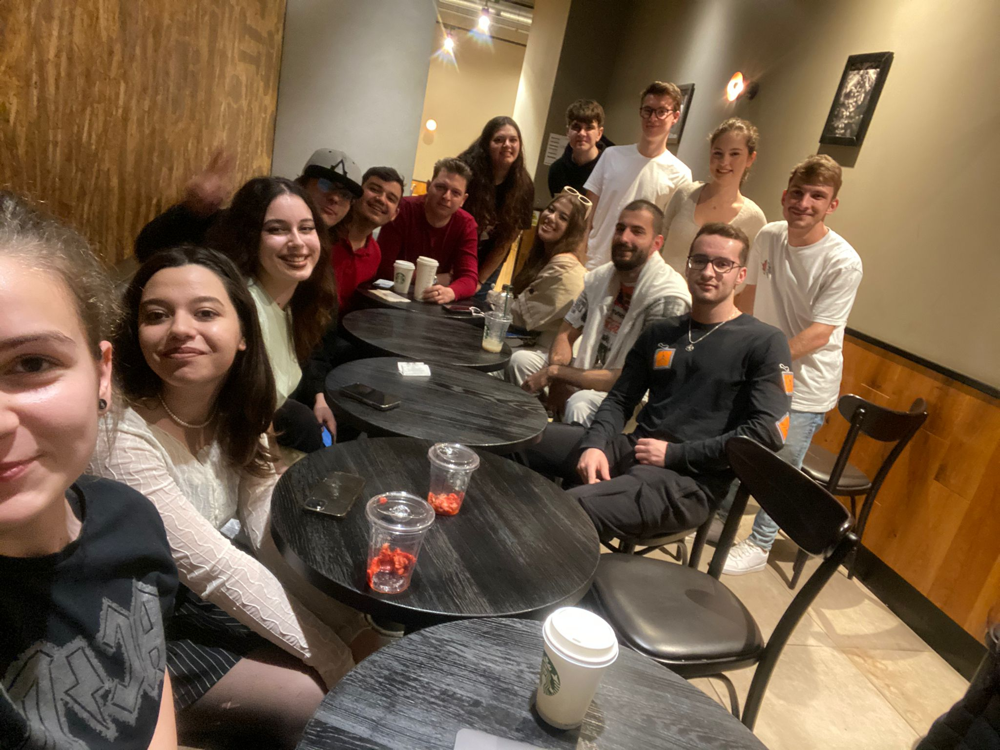

PROGRAM
13-17 Martie
Cladirea Virgil Madgearu (CSIE)
Asociatia copii pentru viitor
Ora: TBA
BookSwap Fest
Târg caritabil de cărți
Despre
Târgul Caritabil "BookSwap Fest" este un eveniment extraordinar cu scopul de a strânge fonduri pentru cauze nobile. Acest târg are o abordare unică, întrucât nu comercializează obiecte sau bunuri care nu ar putea fi de folos studenților, ci pune în centrul atenției materialele didactice precum: cursuri, cărți, culegeri, în schimbul unei sume modice, astfel încât să nu coste o avere pentru studenții dornici de a face o faptă bună, dar în același timp, pentru a reuși să strângem o sumă, fie ea chiar și nesemnificativă, pentru a ajuta pe cei aflați în nevoie. Scopul principal al acestui târg este de a strânge fonduri pentru organizații și cauze caritabile. Banii obținuți în cadrul acestui eveniment vor fi donați în întregime unor cauze atent alese și analizate de voluntarii noștri. Participanții la târg sunt invitați să doneze diverse materiale didactice de interes studentesc în schimbul unor stickere sau să pună spre vânzare ceea ce își propun, cu mențiunea că un procent din preț (ales de participant) va fi donat în cadrul târgului.
Transparență
Noi, echipa Șeptarii, în calitate de organizatorii târgului, vom furniza informații detaliate privind modul în care fondurile vor fi distribuite către organizațiile caritabile și vom face publice rapoarte despre donațiile realizate. Sperăm că acest lucru asigură transparență și încredere din partea participanților. Târgul Caritabil "BookSwap Fest" este o ocazie unică de a aduce comunitatea studențească a CSIE împreună pentru a sprijini cauzele nobile și de a promova generozitatea și solidaritatea. Este un eveniment care pune accent pe impactul pozitiv pe care fiecare donație îl poate avea în viețile celor care au nevoie de ajutor și în dezvoltarea comunității în ansamblu.
Programul Târgului BookSwap Fest
hover to interact

Galeria târgului BookSwap Fest

Our first meeting 🥺

Cladirea Virgil Madgearu

noi suntem Șeptarii
Cazul social sustinut la momentul actual
După cum bine ați aflat, Bookswap fest este un târg caritabil, ocupându-se de strângerea de fonduri pentru cauze nobile. Ediția aceasta, toate donațiile vor fi oferite asociației “Copii pentru viitor”. “Copii pentru viitor” a luat ființă în anul 2016, în județul Hunedoara, având ca misiune îmbunătățirea calității vieții prin reducerea abandonului școlar, integrare sociala, suport psihologic etc. în rândul copiilor și tinerilor din medii dezavantajate. Lunar se ocupă de cumpăratul de alimente, îmbrăcăminte, rechizite, medicamente, de platitul transportului către școală, achitarea taxelor școlare ș.a.m.d. Totodată, organizează ateliere de dezvoltare personală, întâlniri pentru socializare și vizite tematice. Ei coordonează și o multitudine de alte proiecte, precum “Mergi la liceu!”, “Prânzul comunitar” și “Ajutăm împreună”. Pentru mai multe informații, vă încurajăm să le vizitați site-ul și să citiți despre munca lor incredibilă.
Formular de înscriere
Contact
Lasă-ne un mesaj!
Sau urmărește-ne pe social media:


Frequently Asked Questions
Ce este BookSwap Fest?
BookSwap Fest este un târg de cărți organizat în cadrul facultății CSIE, care are ca scop ajutarea studenților cu diverse materiale didactice donate sau oferite spre vânzare, profitul fiind redirecționat spre a ajuta un caz social atent selecționat.
Cine suntem noi?
Echipa 7, cunoscuți sub numele de Șeptarii, suntem o organizație non-profit alcătuită din voluntari din cadrul procesului de recrutare în Sindicatul Studenților din Cibernetică
,asociatie a Facultății CSIE
, parte a Academiei de Studii Economice din București.
Ce cauze ajutăm?
Cazurile sociale pe care le susținem se schimbă destul de frecvent. Pentru a fi la curent cu cazul actual, te invităm să urmărești secțiunea site-ului CAZ SOCIAL sau să te abonezi newsletter-ului nostru.
Cum pot participa?
Îți dorești să ajuți și tu o cauză nobilă? Poți face asta foarte simplu printr-o vizită în incinta facultății CSIE. Nu uita să aduci cu tine orice ești dispus să donezi în scopul strângerii de fonduri.